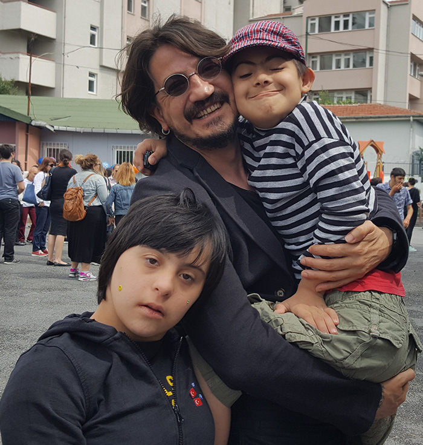

"Sosyal sorumluluk... söylemek, yazmak, hakkında okumak, öyküler dinlemek öyle güzel ki!"
-HAKAN ÇETİNKAYA
İçinde bir yangın halini almasıysa çok uzun bir süreç gerektiriyor; insan, kendini güçlü, kurnaz, iş bilir, kıvrak, çevik ve gerçekten dayanıklı hissettiği sürece, kendisinin de tek başına bir sosyal sorumluluk projesi olduğunu fark
edemiyor. Bu nedenle
uzun ve zorlu bir süreç, o yangına hasıl olmak!
Ama nasılsa, inanmak her şeyin üstesinden gelir.
Bir dernek kurduk dediler; insani değerler için çalışacak bir dernek, yaratılmış tüm canlılar için bile çalışacaktı. Ayakta durması gerek dediler, kendime “çalış Hçk“ dedim.
Onlarca usta müzisyeni ikna ederek konserler düzenledim. Ben hiç inmedim sahnelerden, tüm dostlarımla bizzat çaldım. Adına Merkez üstü konser dedik. Kendini, insan merkezinin biraz üzerinde hissetmek isteyecek herkesi davet ettik.
Paralar
toplandı; kimseye dokundurtmadık. Bir şey yapmıştım, yapabilmiştim. O gün, “para değil, insan kazan“ diyerek bana öğüt veren ustalarımdan, rahmetli Süleyman Süngü’yü andım!
Sonra, “yüz yıllık bir okul kapanıyor, öğrenci azlığından“ dediler, konser düzenledim. Farkındalık yarattım. Ses yaptım, dans edip, ettirdim... fark edildik!
İğne Ada’nın doğal mucizeleri tehlike altında dediler, konser düzenledim. Köy köy gezip, çocuklara ritim eğitimi verdim. Öğrenmenin mucizesi ile, dokundukları her enstrümanın kaynağını, doğayı... doğalarını tanıdılar. Farkına
vardılar!
Çocuklar...
Onlar hayatım oldular; yarınki tüm “ben” lerin, dünkü “bana” ait yanlışlardan uzakta olabilmesine adadım kendimi. Kah müzik öğrettim, kah oynadım, kah güreştim, kah koşup düştüm, toprak eşeledim, şarkılar söyledim, oyuncak arabam
için kavga
bile ettim. Ama dünyalarında kabul gördüm. Kendimin en saf halini tanımaya başladım. Temiz olduğumu, cesur olduğumu, zeki olduğumu, anlayışlı ve kırılgan olduğumu fark ettim; çocuktum! Onlarla, geleceğe fidanlar diktim, okulları
kapanmasın
diye yanlarında çalıştım. Başkalarının “dezavantajlı“ dediği, benimse sadece benden gördüğüm, fakir aile çocuklarına gittim, müzik öğrettim, enstrümanlar aldım/aldırdım... elimdeki tek şey sanatım! Başka verecek, sahip olduğum tek şeyse
sınırsız
sevgim ve saygımdı. Asla “keşke daha fazla gücüm olsaydı“ demedim, demeyeceğim de! Zira bana bahşedilen, ancak benim taşıyabileceğim kadardır. Daha fazlasına sahip olmam için daha fazlasını biriktirmem gerek.
Engelli de ne demek?
Ben, hiç engelli insan görmedim; lakin yüzlerce engelli fikir, bakış, düşünce ve zihniyet biliyorum!
Zihinsel engelli insanların ayağına gittim. “Öğretin bana“ dedim; bana, benim size ulaşamadığım engelimi öğretin.
Şimdilerde birlikte müzik yapıyoruz.
İzev vakfında dört koca yıl, dört sezon, Down sendromlu ve zihinsel engelli dostlarımla olmak, birlikte ses çıkarabilmek, hayatımın anlamı ve amacı halini aldı. Onlar olmadan insan kalabileceğime inanmıyorum.
Yine elimizde sadece Müzik, sevgi, saygı, kabulleniş ve sadece kendimiz olmak var...
Ali İsmail Korkmaz parkı açılıyor müzik yap dediler, koştum. Anne ve babasını sahneye davet edip, ellerini öpmek bana nasip oldu. Evlat acısıyla yanan anne ve babanın göğsüne düştü bedenim; daha önce kimse bana sarılmamış!
Anlatırken böyle söyleniyor ama anlaşılması gereken şu: Önüme çıkan bir yardım çağrısına kayıtsız kalmamam gerektiğini, bana kayıtsız kalışlardan öğrendim.
Çok denedim ancak bir siyasi görüşüm olamadı. Ben, Yaradan bilirim ve yaratılan; fikrimce insan, yaratılanı, yaratandan ötürü sevip-saymak, kendinden bilmek, her bir canlıyı, doğayı, denizi ve toprağı benliğiyle benimsemek
zorundadır.
Tek arzum, insan olmaya adım atabilmiş olarak gitmektir yaşamımdan.
SOSYAL SORUMLULUK VE HÇK
İçinde bir yangın halini almasıysa çok uzun bir süreç gerektiriyor; insan, kendini güçlü, kurnaz, iş bilir, kıvrak, çevik ve gerçekten dayanıklı hissettiği sürece, kendisinin de tek başına bir sosyal sorumluluk projesi olduğunu fark edemiyor. Bu nedenle uzun ve zorlu bir süreç, o yangına hasıl olmak!Ama nasılsa, inanmak her şeyin üstesinden gelir.
Bir dernek kurduk dediler; insani değerler için çalışacak bir dernek, yaratılmış tüm canlılar için bile çalışacaktı. Ayakta durması gerek dediler, kendime “çalış Hçk“ dedim.
Onlarca usta müzisyeni ikna ederek konserler düzenledim. Ben hiç inmedim sahnelerden, tüm dostlarımla bizzat çaldım. Adına Merkez üstü konser dedik. Kendini, insan merkezinin biraz üzerinde hissetmek isteyecek herkesi davet ettik. Paralar toplandı; kimseye dokundurtmadık. Bir şey yapmıştım, yapabilmiştim. O gün, “para değil, insan kazan“ diyerek bana öğüt veren ustalarımdan, rahmetli Süleyman Süngü’yü andım!
Sonra, “yüz yıllık bir okul kapanıyor, öğrenci azlığından“ dediler, konser düzenledim. Farkındalık yarattım. Ses yaptım, dans edip, ettirdim... fark edildik!
İğne Ada’nın doğal mucizeleri tehlike altında dediler, konser düzenledim. Köy köy gezip, çocuklara ritim eğitimi verdim. Öğrenmenin mucizesi ile, dokundukları her enstrümanın kaynağını, doğayı... doğalarını tanıdılar. Farkına vardılar!
Çocuklar...
Onlar hayatım oldular; yarınki tüm “ben” lerin, dünkü “bana” ait yanlışlardan uzakta olabilmesine adadım kendimi. Kah müzik öğrettim, kah oynadım, kah güreştim, kah koşup düştüm, toprak eşeledim, şarkılar söyledim, oyuncak arabam için kavga bile ettim. Ama dünyalarında kabul gördüm. Kendimin en saf halini tanımaya başladım. Temiz olduğumu, cesur olduğumu, zeki olduğumu, anlayışlı ve kırılgan olduğumu fark ettim; çocuktum! Onlarla, geleceğe fidanlar diktim, okulları kapanmasın diye yanlarında çalıştım. Başkalarının “dezavantajlı“ dediği, benimse sadece benden gördüğüm, fakir aile çocuklarına gittim, müzik öğrettim, enstrümanlar aldım/aldırdım... elimdeki tek şey sanatım! Başka verecek, sahip olduğum tek şeyse sınırsız sevgim ve saygımdı. Asla “keşke daha fazla gücüm olsaydı“ demedim, demeyeceğim de! Zira bana bahşedilen, ancak benim taşıyabileceğim kadardır. Daha fazlasına sahip olmam için daha fazlasını biriktirmem gerek.
Engelli de ne demek?
Ben, hiç engelli insan görmedim; lakin yüzlerce engelli fikir, bakış, düşünce ve zihniyet biliyorum!
Zihinsel engelli insanların ayağına gittim. “Öğretin bana“ dedim; bana, benim size ulaşamadığım engelimi öğretin.
Şimdilerde birlikte müzik yapıyoruz.
İzev vakfında dört koca yıl, dört sezon, Down sendromlu ve zihinsel engelli dostlarımla olmak, birlikte ses çıkarabilmek, hayatımın anlamı ve amacı halini aldı. Onlar olmadan insan kalabileceğime inanmıyorum.
Yine elimizde sadece Müzik, sevgi, saygı, kabulleniş ve sadece kendimiz olmak var...
Ali İsmail Korkmaz parkı açılıyor müzik yap dediler, koştum. Anne ve babasını sahneye davet edip, ellerini öpmek bana nasip oldu. Evlat acısıyla yanan anne ve babanın göğsüne düştü bedenim; daha önce kimse bana sarılmamış!
Anlatırken böyle söyleniyor ama anlaşılması gereken şu: Önüme çıkan bir yardım çağrısına kayıtsız kalmamam gerektiğini, bana kayıtsız kalışlardan öğrendim.
Çok denedim ancak bir siyasi görüşüm olamadı. Ben, Yaradan bilirim ve yaratılan; fikrimce insan, yaratılanı, yaratandan ötürü sevip-saymak, kendinden bilmek, her bir canlıyı, doğayı, denizi ve toprağı benliğiyle benimsemek zorundadır.
Tek arzum, insan olmaya adım atabilmiş olarak gitmektir yaşamımdan.